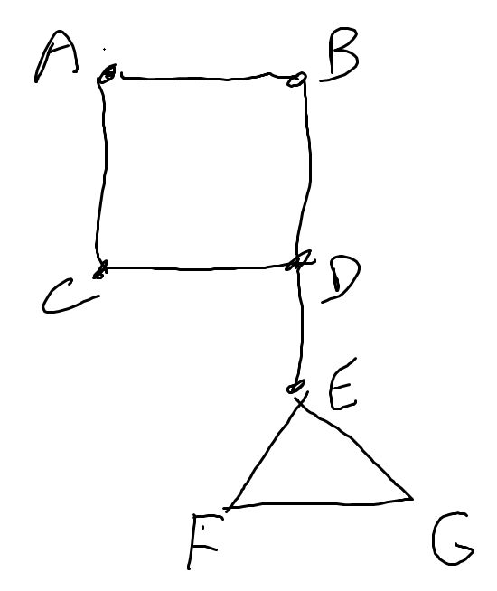

Based on content taught by Diane Souvaine and Karen Edwards in Fall 2021.
You are currently in learn mode. To switch to test mode, click here.
1. \(f(n) = o(g(n))\) iff....
2. What is the recurrence of the following recursion tree (only the first three levels are shown)?

3. Consider the following recurrence: \(T(n) = 3T(\frac{n}{3})+n \log{n}\). The runtime of \(T(n)\) is...
4. Heap sort is all of the following EXCEPT...
5. Quicksort takes \(\Theta(n^2)\) runtime in the worst case but is expected to take \(\Theta(n \log{n})\) time. What is a modification one can make to make quicksort take \(\Theta(n \log{n})\) time in the worst case?
6. The proof of the \(\Omega(n \log{n})\) lower bound to any comparison based sorting algorithm in the worst case involves using a decision tree, where each node represents a comparison. How many leaves does this tree have?
7. What is the precomputed prefix array used for the KMP string matching algorithm for the pattern ABCABCAC?
[1, 2, 3, 1, 2, 3, 1, 3][0, 0, 0, 1, 2, 3, 1, 0][0, 0, 0, 1, 2, 3, 4, 0][0, 0, 0, 1, 2, 3, 1, 3]8. What is a potential function that can be used to show that expanding an array takes at most \(\Theta(1)\) amortized time?
9. Consider the following pseudocode for finding the nth number in the Fibonacci sequence. This in-place algorithm takes exponential time. A Dynamic Programming solution would improve the runtime to ___ time, but at the cost of ___ space.
// Input: n is an integer
FIBONACCI(n):
IF n == 0 OR n == 1, return 1
ELSE, return FIBONACCI(n-1)+FIBONACCI(n-2)10. An optimal binary search tree...
11. Consider a red-black tree with height 3. What is the minimum number of possible nodes the tree can have?
12. Suppose that an implementation of a hash table uses chaining to handle collisions, but stores a red-black tree in each slot instead of a linked list. This change in implementation causes the runtime of inserting to _____ and of searching to _____.
13. Suppose that you want to design an augmented tree where you can insert, search, remove, and find the rank of an element in \(\Theta(\log n)\) time. What augmented information would you put in each node?
14. Let \(n\) be the number of vertices in a graph and let \(e\) be the number of edges. For a complete graph, \(e\) equals...
15. Consider the following graph. Is the subgraph containing only the vertices \(D\) and \(E\) (and the edge between them) a biconnected component?
16. Topological sort is designed for what kind of graphs?
17. Consider the following graph. Kruskal's MST algorithm would insert which edge first?

18. The Floyd-Warshall All Pairs Shortest Path algorithm is a Dynamic Programming solution that requires how much extra space?
Let \(n\) = number of vertices and let \(e\) = number of edges
19. For a fibonacci min-heap, which of the following is the only operation that takes longer than \(O(1)\) amortized time?
20. Because it is possible to sort integers using the convex hull problem, and all steps converting input and output between the sorting problem and the convex hull problem have a quick runtime, the convex hull problem MUST take \(\Omega(n \log{n})\) time. This lower bound is determined by a method called...